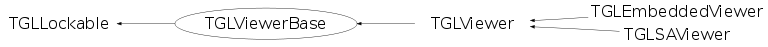

class TGLViewerBase: public TGLLockable
Base class for GL viewers. Provides a basic scene management and a small set of control variables (camera, LOD, style, clip) that are used by the scene classes. Renering wrappers are available but minimal. There is no concept of GL-context here ... we just draw into whatever is set from outside. Development notes: Each viewer automatically creates a TGLRnrCtx and passes it down all render functions.
Function Members (Methods)
public:
protected:
| TGLViewerBase::SceneInfoList_i | FindScene(TGLSceneBase* scene) |
| virtual void | SetupClipObject() |
| void | SubRenderScenes(TGLViewerBase::SubRender_foo render_foo) |
private:
| TGLViewerBase(const TGLViewerBase&) | |
| TGLViewerBase& | operator=(const TGLViewerBase&) |
Data Members
public:
| enum TGLLockable::ELock { | kUnlocked | |
| kDrawLock | ||
| kSelectLock | ||
| kModifyLock | ||
| }; |
protected:
| TGLCamera* | fCamera | Camera for rendering. |
| Bool_t | fChanged | Change requiring redraw is pending. |
| TGLClip* | fClip | Viewer clipping-plane. |
| Short_t | fLOD | Viewer-lod for rendering. |
| TGLLockable::ELock | TGLLockable::fLock | Lock state. |
| Float_t | fOLLineW | Optional override of scene outline line-width |
| TGLBoundingBox | fOverallBoundingBox | Axis-aligned union of scene bboxes. |
| vector<TGLOverlayElement*> | fOverlay | |
| Bool_t | fResetSceneInfosOnRender | Request rebuild of view-specific scene data. |
| TGLRnrCtx* | fRnrCtx | |
| list<TGLSceneInfo*> | fScenes | Registered scenes. |
| Short_t | fStyle | Viewer-style for rendering. |
| vector<TGLSceneInfo*> | fVisScenes | Visible scenes. |
| Float_t | fWFLineW | Optional override of scene wire-frame line-width |
Class Charts
{kind=link}
{kind=link}
{kind=link}
{kind=link}

Function documentation
void SceneDestructing(TGLSceneBase* scene)
Remove scene, its scene-info is deleted. Called from scene that is being destroyed while still holding viewer references.
TGLLogicalShape* FindLogicalInScenes(TObject* id)
Find logical-shape representing object id in the list of scenes. Return 0 if not found.
void ResetSceneInfos()
Force rebuild of view-dependent scene-info structures. This should be called before calling render (draw/select) if something that affects camera interest has been changed.
void PreRender()
Initialize render-context, setup camera, GL, render-area. Check and lock scenes, determine their visibility.
void SubRenderScenes(TGLViewerBase::SubRender_foo render_foo)
Call sub-rendering function render_foo on all currently visible scenes.
void Render()
Render all scenes. This is done in four passes: - render opaque objects from all scenes - render transparent objects from all scenes - clear depth buffer - render opaque selected objects from all scenes (with highlight) - render transparent selected objects from all scenes (with highlight)
void PreRenderOverlaySelection()
Perform minimal initialization for overlay selection. Here we assume that scene has already been drawn and that camera and overall bounding box are ok. Scenes are not locked.
Bool_t ResolveSelectRecord(TGLSelectRecord& rec, Int_t recIdx)
Process selection record on buffer-position 'recIdx' and fill the data into 'rec'. Returns TRUE if scene was demangled and an object identified. When FALSE is returned it is still possible that scene has been identified. Check for this if interested in scene-selection. The select-buffer is taken form fRnrCtx.
Bool_t FindClosestRecord(TGLSelectRecord& rec, Int_t& recIdx)
Find next select record that can be resolved, starting from position 'recIdx'. 'recIdx' is passed as reference and points to found record in the buffer.
Bool_t FindClosestOpaqueRecord(TGLSelectRecord& rec, Int_t& recIdx)
Find next select record that can be resolved and whose result is not transparent, starting from position 'recIdx'. 'recIdx' is passed as reference and points to found record in the buffer.
Bool_t FindClosestOverlayRecord(TGLOvlSelectRecord& rec, Int_t& recIdx)
Find next overlay-select record that can be resolved, starting from position 'recIdx'. 'recIdx' is passed as reference and points to found record in the buffer.
TGLViewerBase(const TGLViewerBase& )
TGLViewerBase& operator=(const TGLViewerBase& )